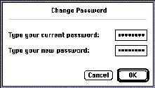
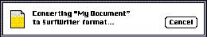

|
Modal Dialog BoxesA modal dialog box puts the user in the state, or mode, of being able to work only inside the dialog box. It temporarily suspends all other actions in an application and the computer. It forces the user to make decisions before doing any other actions, such as working on a document or switching to another application. Users can cancel a modal dialog box, they can respond to a message, or they can use a modal dialog box to set parameters or assign values to content in the active document. Modal dialog boxes are restrictive in that they require the user to stop any other activity and pay attention only to the current modal dialog box. The user cannot move a modal dialog box, and the user can dismiss it only by clicking its buttons. If the user clicks any other window or on the desktop, the system beeps, but nothing else happens. See the section "Button Names" on page 207 in Chapter 7, "Controls," for detailed descriptions of how to name buttons and what actions users expect from appropriately named buttons.An alert box is a special case of a modal dialog box. Use alert boxes when you need to get the user's attention to respond to an immediate need, to warn the user of an impending situation, or to force a necessary decision. For example, the dialog box that asks the user what to do with a document with unsaved changes is an alert box; in effect, it warns the user that if the user doesn't save changes to the document, those changes will be lost. Alert boxes are described in the section "Alert Boxes" on page 191. Modal dialog boxes allow the user to make unambiguous state changes. The action buttons in the dialog box confirm the action and indicate when the changes take effect. With modal dialog boxes you can avoid intermediate states that can occur with a modeless dialog box, where the user's changes take effect without the user being aware that this is happening. Figure 6-12 shows one example of a modal dialog box. Figure 6-12 An example of a modal dialog box  Use modal dialog boxes when it's appropriate to restrict user input to a certain order, that is, when your application needs information before it can continue. A modal dialog box is fairly simple to implement, but that doesn't mean that you should use modal dialog boxes too freely. You should rarely restrict the user's actions by forcing the user into a mode. When your application needs to preserve a user selection in order to act on it, use a modal dialog box. This should be a task-specific, limited interaction that affects only the current task. Modal dialog boxes are good for implementing tasks that are short and simple because they typically allow the user to complete an action and dismiss the dialog box with the click of a single button. That is, the user doesn't have to explicitly close the dialog box as a separate step to initiate the action, as is sometimes the case with modeless dialog boxes. Use a modal dialog box for an action that the user needs to perform infrequently. For example, the Page Setup command displays a modal dialog box that contains settings that the user will probably set once for each document. This is a case where it makes sense to implement a modal dialog box because the user can set how the document will be displayed and doesn't need to have constant access to the dialog box. You could use a modeless dialog box in this case, but you wouldn't get any extra flexibility or use from its being modeless. Also, modal dialog boxes are typically easier to implement than modeless dialog boxes. Modal dialog boxes are also useful for providing temporal status. The status may reflect a change from one version to another or an attribute of a document that is subject to change over the use of an application. One example would be a modal dialog box that informs a user that a document was created using a different version of the application. Another example of this is the status dialog box shown in Figure 6-13, which shows the progress of converting a document to a new format. Figure 6-13 A status dialog box  Subtopics |